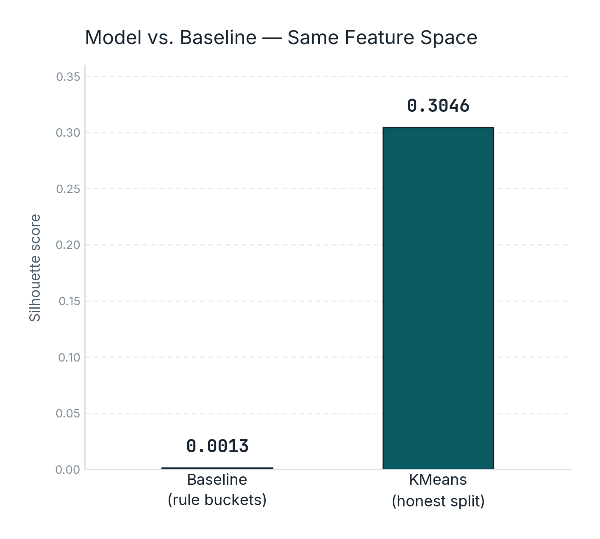
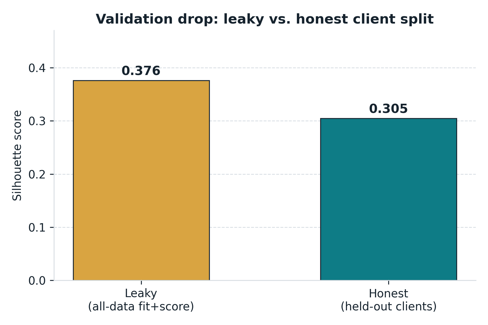
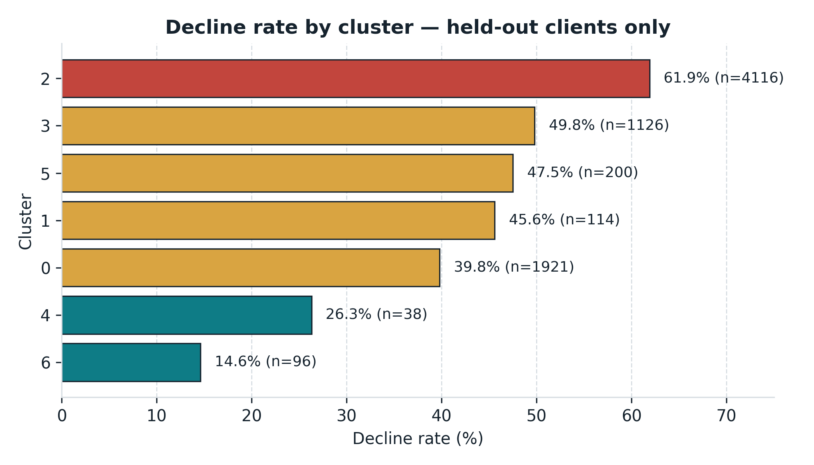
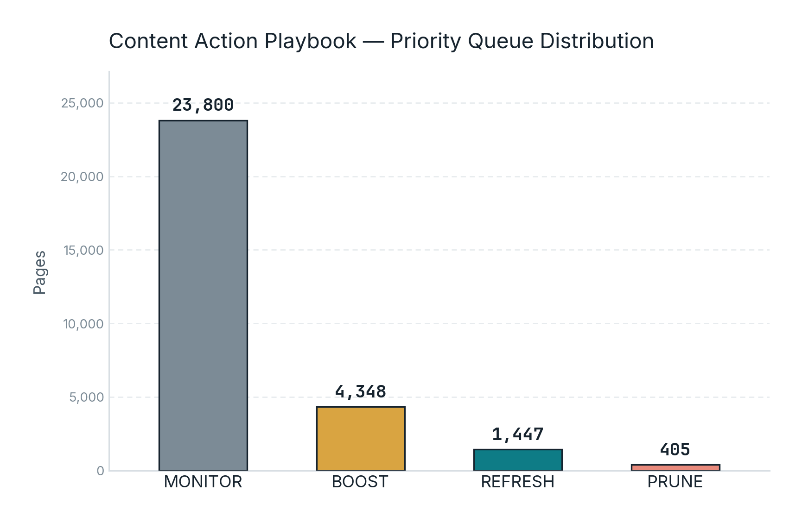

Which content pages should a reviewer check first?
Thirty thousand pages, far more than a content team can inspect by hand. This paper groups pages by observed search behavior, validates those behavioral archetypes against unseen clients, and translates the result into a human-review priority queue — with explicit limits on what the analysis can claim.
Honest validation changes the number
The all-data KMeans evaluation reaches 0.3763 silhouette, but the client-held-out evaluation is the number to trust: 0.3046.
| Approach | Silhouette | Reading it |
|---|---|---|
| Baseline: rule-based buckets | 0.0013 | essentially no natural separation |
| KMeans · k=7 · all-data fit | 0.3763 | strong, but evaluated on data used to fit |
| KMeans · k=7 · client-held-out | 0.3046 | trustworthy evaluation on unseen clients |


The split-integrity check
The first evaluation fit the KMeans centroids and scored the same 30,000 rows. That produces a useful descriptive number, but it does not answer whether the discovered archetypes generalize to a client the model never saw.
The honest evaluation grouped by client_id, fitting on
approximately 80% of clients and scoring on approximately 20% held-out
clients. The held-out set contained 7 clients and 7,611 pages.
Seven groups, not seven labels invented by hand
KMeans groups pages using five standardized observed signals: impressions, CTR, average position, engagement rate, and content age.

Cluster profile at a glance
| Cluster | Avg impressions | Avg position | Main trait |
|---|---|---|---|
| C6 | ~112k | Strong | High-traffic performers |
| C0 | ~3.9k | 11.2 | Established / older content |
| C1 | ~4.0k | 11.6 | Newer / steady content |
| C4 | ~2.8k | 46.2 | Low-CTR / weak ranking |
| C3 | ~4 | 6.2 | Low-volume / high-CTR |
| C2 | ~403 | 18.2 | High-engagement pages |
| C5 | Intermediate | Intermediate | Borderline-fit content |
Cluster 6 is a small group of very high-visibility pages, averaging approximately 112k impressions over 90 days, with typical CTR and strong average position.
Cluster 0 contains established pages averaging approximately 383 days old, with around 3.9k impressions, 0.42 CTR, and an average position of 11.2.
Cluster 1 is the largest group of relatively newer pages, averaging approximately 150 days old, with around 4.0k impressions, 0.29 CTR, and an average position of 11.6.
Cluster 4 contains pages with weak click-through behavior and poor rankings, averaging approximately 0.10 CTR and position 46.2, with around 2.8k impressions.
Cluster 3 is a very small group averaging only about 4 impressions but an unusually high 41.35 CTR and a strong average position of 6.2.
Cluster 2 is a small unusual group with approximately 97.34 average engagement, despite relatively low traffic of around 403 impressions and an average position of 18.2.
Cluster 5 contains pages with intermediate engagement behavior and weaker cluster separation. Most of the negative-silhouette points were concentrated here, showing where KMeans has the most difficulty assigning a clear archetype.
The seven clusters were profiled descriptively across all 30,000 pages. Their profiles are based on measured differences in traffic, CTR, ranking position, engagement, and content age. The clusters are behavioral groupings rather than semantic categories, and no page text was used.
The action queue
Every page receives one of four review actions. The queue is a prioritization tool: the higher-priority rows deserve human inspection first, not automatic execution.

| Priority | Action | Trigger | Pages |
|---|---|---|---|
| 1 | REFRESH | top 3 / page 1, declining >20% MoM, CTR well below tier | 1,447 |
| 2 | BOOST | position 11–20, CTR below expectation | 4,348 |
| 3 | PRUNE | deep / unranked, declining, bottom-quartile visibility | 405 |
| 4 | MONITOR | no strong signal requiring immediate action | 23,800 |
What should never be automated
The system must not automatically delete URLs, redirect URLs without human verification, modify core brand or legal pages, change site navigation, or restructure URLs based solely on the model or playbook output.
A recommendation means “this page is worth inspecting.” It does not mean the recommended action is automatically correct.
What went in, what didn't, and how it was tested
Main sample
30,000 anonymized content pages, one row per content item, represented by metrics aggregated over a trailing 90-day window.
Broader release
The warehouse release contains 78.8M daily performance rows, 519,606 distinct content items, and 104 clients.
Clustering features
Five standardized observed signals: impressions, CTR, average ranking position, engagement rate, and content age.
Model
KMeans clustering with k selected by silhouette search over k=2 through k=7. The winning value was k=7.
Why KMeans?
This lane does not primarily ask for a predicted target. It asks whether pages can be grouped into understandable behavioral archetypes. KMeans provides cluster membership that can be profiled and translated into a review workflow without pretending that the clusters represent semantic page topics or Google's ranking system.
Client-held-out validation
Approximately 80% of clients were used for fitting and approximately 20% were held out. Centroids were fitted only on training-client rows, then used to score the held-out clients without fitting on them.
Leakage checks
Three checks were performed: k-selection was repeated using training clients only and still selected k=7; identifiers and label-source columns were excluded from the clustering features; and a separate data-contract exercise demonstrated how a same-window feature could inflate toy-label accuracy from 0.591 to 1.000. That leakage pattern was excluded from the clustering pipeline.
A simple rule had to come first
Before fitting KMeans, a transparent rule-based baseline was built without learned weights.
Signal check
Staleness versus decline was mixed. Decline rose from 51.1% in younger pages to 61.1% across later freshness buckets, but fell to 47.1% in the oldest bucket. Because the relationship was not consistent, staleness was excluded from the baseline score.
Position vs CTR
The position-to-CTR relationship was confirmed. Median CTR generally falls as ranking position weakens, supporting a position-adjusted CTR gap as the baseline's core signal.
Baseline formula
eligible * visibility_score * ctr_gap_norm
Eligible pages satisfy:
impressions_90d >= 500 AND avg_position > 0 AND position_tier != 'no_data'
| Action | Score condition | Pages |
|---|---|---|
| prioritize_ctr_review | ≥ 0.6 | 3,912 |
| review_ctr | > 0 and < 0.6 | 12,814 |
| monitor | = 0 | 13,274 |
What this can't claim
The clustering is cross-sectional and descriptive. No page was actually refreshed and re-measured, so the results do not show that following a recommendation will improve traffic.
This is not a prediction of Google's ranking algorithm and not semantic clustering. No page text was used; the archetypes are based only on five observed metrics.
The 14.6%–61.9% decline-rate range comes from only seven held-out clients and should not be generalized to the full client population without further validation.
The main pipeline uses 30,000 pages from a broader 519,606-content-item catalog. Cluster shapes have not been re-validated at the full catalog scale.
The baseline was not re-tested under the same client-held-out evaluation. The honest held-out validation specifically applies to KMeans.
Finally, the playbook thresholds are simple, un-tuned cutoffs. They are a starting queue design, not a validated production decision policy.
Reproduce it
Everything above can be re-run from the repository with random seed
42.
pip install -r requirements.txt
Core notebooks
capstone.ipynb — full capstone pipeline
w05_model.ipynb — KMeans model and cluster interpretation
w06_validation_audit.ipynb — client-grouped validation and leakage audit
w07_action_playbook.ipynb — ranked action playbook
Data credit
Built on the FlyRank ML Internship dataset — real, pseudonymized production search and analytics data provided for the internship track.
This report uses observed, measured, directional, and decision-support language throughout. It does not claim causal impact or prediction of Google's ranking algorithm.